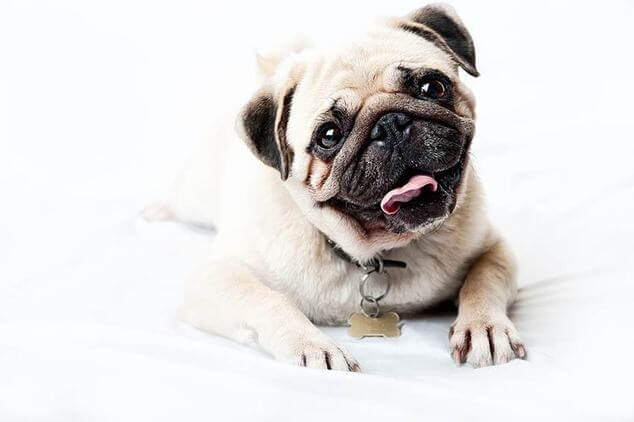

Мопс — собака для людей с особой душевной организацией, открытых, бескорыстных, интеллигентных и интеллектуальных, смотрящих на мир через призму любви ко всему, что их окружает.

Конечно, мопс не обладает утонченной грацией борзых или напористым нравом бульдогов, а тем более качествами овчарки, однако, каким-то невероятным образом, Создатель сумел воплотить в мопсе все то, что делает его поистине уникальным среди многообразия собачьих пород.
Каждый мопс, будь то, увалень или резвушка — большая индивидуальность, более того, это личность, требующая к себе уважения. Каждый мопсовод это знает, причем так случается, что под одной крышей живут несколько мопсов, каждый из которых абсолютно уникален не только по внешним признакам, но и по привычкам, поведению, характеру.
Единственное, что объединяет всех мопсов — безоговорочная любовь к человеку. Это не раболепная любовь сторожевой собаки, и не потребительская любовь представителей декоративных парод. Любовь мопса — это взвешенное чувство самодостаточного существа, которое не требует подтверждения, лишь ответного чувства взамен.
Этот сайт призван помогать делать первые шаги на пути осознания уникального дара природы — мопса. Мы приглашаем всех, у кого в доме живет маленькое чудо — мопс, стать участниками проекта, задавать вопросы, консультировать новичков, а самое главное нести любовь к мопсам в мир, популяризируя породу.